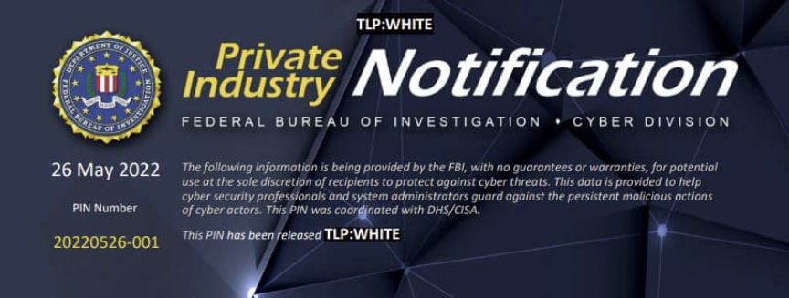
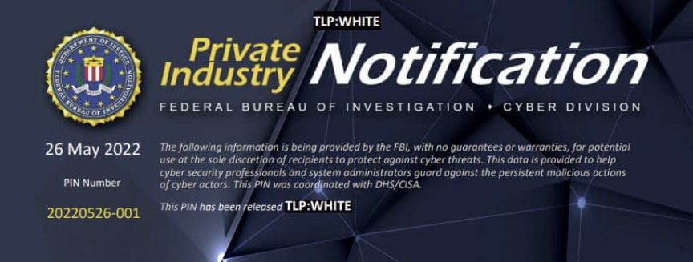

FBI: Academic Credentials for Sale on the Darkweb
~3 min read | Published on 2022-05-27, tagged General-News using 542 words.
An alert from the FBI warns that compromised US academic credentials are being sold on the darkweb.
A Private Industry Notification (PIN) from the Federal Bureau of Investigation (FBI) warns that investigators have identified compromised US academic credentials on forums, including at least one on the darkweb.Summary
“The FBI is informing academic partners of identified US college and university credentials advertised for sale on online criminal marketplaces and publically accessible forums. This exposure of sensitive credential and network access information, especially privileged user accounts, could lead to subsequent cyber attacks against individual users or affiliated organizations.”

Threat
“Cyber actors continue to conduct attacks against US colleges and universities, leading to the exposure of user information on public and cyber criminal forums. Credential harvesting against an organization is often a byproduct of spear-phishing, ransomware, or other cyber intrusion tactics. For example, in 2017, cyber criminals targeted universities to hack .edu accounts by cloning university login pages and embedding a credential harvester link in phishing emails. Successfully harvested credentials were then sent to the cyber criminals in an automated email from their servers. Such tactics have continued to prevail and ramped up with COVID-themed phishing attacks to steal university login credentials, according to security researchers from a US-based company in December 2021.”
“The FBI has observed incidents of stolen higher education credential information posted on publically accessible online forums or listed for sale on criminal marketplaces. The exposure of usernames and passwords can lead to brute force credential stuffing computer network attacks, whereby attackers attempt logins across various internet sites or exploit them for subsequent cyber attacks as criminal actors take advantage of users recycling the same credentials across multiple accounts, internet sites, and services. If attackers are successful in compromising a victim account, they may attempt to drain the account of stored value, leverage or re-sell credit card numbers and other personally identifiable information, submit fraudulent transactions, exploit for other criminal activity against the account holder, or use for subsequent attacks against affiliated organizations.”
Examples
As of January 2022, Russian cyber criminal forums offered for sale or posted for public access the network credentials and virtual private network accesses to a multitude of identified US-based universities and colleges across the country, some of which included screenshots as proof of access. Sites posting credentials for sale typically listed prices varying from a few to multiple thousands of US dollars. In May 2021, over 36,000 email and password combinations (some of which may have been duplicates) for email accounts ending in .edu were identified on a publicly available instant messaging platform. The group posting the compromised data appeared to be involved in the trafficking of stolen login credentials and other cyber criminal activities. In late 2020, US territory-based university account usernames and passwords with the domain .edu were found for sale on the dark web. The seller listed approximately 2,000 unique usernames with accompanying passwords and asked for donations be made to an identified bitcoin wallet. As of early 2022, the site containing the credentials was no longer accessible.
It surprises me that something as mundane as compromised academic credentials meets the threshold for a PIN.
[em]Compromised US Academic Credentials Identified Across Various Public and Dark Web Forums[/em] pdf
A Private Industry Notification (PIN) from the Federal Bureau of Investigation (FBI) warns that investigators have identified compromised US academic credentials on forums, including at least one on the darkweb.Summary
“The FBI is informing academic partners of identified US college and university credentials advertised for sale on online criminal marketplaces and publically accessible forums. This exposure of sensitive credential and network access information, especially privileged user accounts, could lead to subsequent cyber attacks against individual users or affiliated organizations.”

Compromised US Academic Credentials Identified Across Various Public and Dark Web Forums
Threat
“Cyber actors continue to conduct attacks against US colleges and universities, leading to the exposure of user information on public and cyber criminal forums. Credential harvesting against an organization is often a byproduct of spear-phishing, ransomware, or other cyber intrusion tactics. For example, in 2017, cyber criminals targeted universities to hack .edu accounts by cloning university login pages and embedding a credential harvester link in phishing emails. Successfully harvested credentials were then sent to the cyber criminals in an automated email from their servers. Such tactics have continued to prevail and ramped up with COVID-themed phishing attacks to steal university login credentials, according to security researchers from a US-based company in December 2021.”
“The FBI has observed incidents of stolen higher education credential information posted on publically accessible online forums or listed for sale on criminal marketplaces. The exposure of usernames and passwords can lead to brute force credential stuffing computer network attacks, whereby attackers attempt logins across various internet sites or exploit them for subsequent cyber attacks as criminal actors take advantage of users recycling the same credentials across multiple accounts, internet sites, and services. If attackers are successful in compromising a victim account, they may attempt to drain the account of stored value, leverage or re-sell credit card numbers and other personally identifiable information, submit fraudulent transactions, exploit for other criminal activity against the account holder, or use for subsequent attacks against affiliated organizations.”
Examples
[em]Compromised US Academic Credentials Identified Across Various Public and Dark Web Forums[/em] pdf